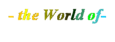
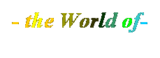
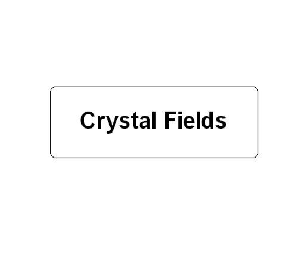
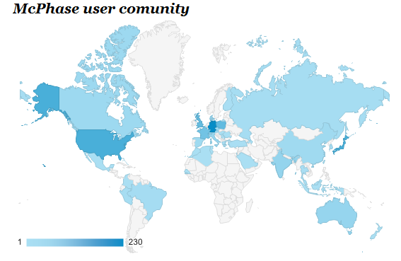

We offer
Courses/Schools/Workshops
Mailing List
User Groups
Projects
Additional Software
Publications
Sponsors

McPhase
is an open source
program package for the
calculation of magnetic
properties
...and much more
Online Manual
For a Download Link or USB Stick Distribution - please contact mcphase[at]icloud.com
Latest version is McPhase 5.6
go to top
Courses/Schools/Workshops
for Mcphase Users:
McPhase 2025, McPhase Online MicroWorkshop 21.-25. July 2025 Information and Registration
McPhase 2025, McPhase Online MicroWorkshop 6.-10. October 2025 Information and Registration
McPhase
2026, McPhase
MicroWorkshop in Venice, Italy, 19.-23. January 2026 Information and Registration
Workshop History
To organise a McPhase tutorial course, contact
mcphase[at]icloud.com
go to top
We offer
*
McPhase Courses and workshops
*
McPhase Email Service - assistance in installing and running the program (institutions:
500€/year , individuals 100€/year)
*
Collaboration in McPhase Simulations for specific
Systems/Compounds
*
Software Development for specific software,
which will become public when sufficient funding has been reached
Contact: mcphase[at]icloud.com
go to top
Mailing List:
to subscribe to
the McPhase mailing list, contact mcphase[at]icloud.com
go to top
McPhase Projects and Development Team
|
Project (to support contact
mcphase[at]icloud.com)
|
Development Status
|
Price (estimate)
|
Funding Status
|
|
A
Cluster Module & Easy Setup of Coupled Cluster Calculations
|
80%
|
8000 €
|
27%
|
|
Improved Sampling Method in
Powder Spectra (program powdermagnon)
|
0%
|
1000€
|
0%
|
|
Option to output Operator Matrices (program
singleion)
|
100%
|
400€
|
100%
|
|
Graphics Program to visualize Magnetic
Interactions listed in mcphas.j
|
100%
|
4000€
|
100%
|
|
Youtube Movie on how to get McPhase installed
|
0%
|
200€
|
0%
|
|
Formfactor Coefficients for 5d Elements Database
|
0%
|
200€
|
0%
|
|
McPhase MAC/OS Version of McPhase
|
50%
|
6000€
|
0%
|
|
Symmetrize Interactions in mcphas.j by applying
Space Group Symmetry
|
0%
|
16000€
|
0%
|
|
Crystal-Field-Phonon Coupling - Calculation of Neutron Spectra
|
100%
|
2000€
|
100%
|
|
Extending McPhase to include Stress tensor
|
0%
|
2000€
|
0%
|
Martin
Rotter, Scientific Consultant, McPhase Project
Duc Manh Le, ISIS Neutron and Muon Source, Rutherford Appleton Laboratory, UK
Joachim Keller, University of
Regensburg, Germany
Till Hoffmann, Lucian Pascut,
University of Oxford, Department of Physics Clarendon Laboratory, UK
R. Schedler,
Helmholtz-Zentrum Berlin für Materialien und Energie, Berlin,
Germany
M. Doerr, Institut für Festkörperphysik,
Technische Universität Dresden, Germany
P. Fabi né
Hoffmann, Forschungszentrum Jülich, Germany
S. Rotter, Wien,
Austria
M. Banks, Max Planck Institute,
Stuttgart, Germany
go to top
McPhase is sponsored by:
|
Center for Correlated Electron Systems,
Institute for Basic Sciences, Korea (2013-2015)
|
|
Max Planck Institute for Chemical Physics of Solids,
Dresden (2010-2015)
|
|
|
Institute for Solid State Physics
Technical University Dresden (2004-2016)
|
|
Jülich Centre for Neutron Science JCNS
Forschungszentrum Jülich GmbH
Außenstelle am MLZ Garching (2015-2016)
|
|
|
Institute for Solid State Physics
University of Tokyo (2015-2016)
|
|
|
go to top
Additional Software:
Linux: PerlDataLanguage: *pdl
PageplotGraphicsLibrary:
*pgplot5.2.2
PerlBindingforPgPlot:
*pgplotperl2.18
Windows: PowderCell
GnuCompilers: mingw and msys
go to top
McPhase User Groups

go to top
Important Publications
--------------
- Ferrimagnetic structures with rare-earth induced spin-reorientation in the Mn self-doped perovskite (Er0.7Mn0.3)MnO3 Andreas Dönni, Vladimir Y. Pomjakushin, Martin Rotter, Lei Zhang, Kazunari Yamaura, Alexei A. Belik, Ceramics International 50 (2024) 43414-43423
https://doi.org/10.1016/j.ceramint.2024.08.191
- Magnetic structure of Tb3NbO7 determined using neutron diffraction experiments and magnetic anisotropy calculations Masashi Hase, Andreas Dönni, Vladimir Yu. Pomjakushin, Martin Rotter, J. Magn. Magn. Mater. 599 (2024) 172106
https://doi.org/10.1016/j.jmmm.2024.172106
- Role of crystal-field ground state in the classical spin-liquid behavior of the quasi-one-dimensional spin-chain system Sr3NiPtO6 V. K. Anand, D. T. Adroja, S. Rayaprol, A. D. Hillier, J. Sannigrahi, M. Rotter, M. D. Le and E. V. Sampathkumaran, PHYSICAL REVIEW B 108, 144426 (2023) https://doi.org/10.1103/PhysRevB.108.144426
- McPhase model calculations of the magnetic phase diagram of CeCu2Ge2 Prediction of a double q magnetic structure M. Rotter and M. Doerr, Computational Materials Science 142 (2018) 206-214
https://doi.org/10.1016/j.commatsci.2017.10.008
- Magnetic phase diagram of CeCu2Ge2 up to 15 T: On the route to understand field-induced phase transitions P. Geselbracht, A. Schneidewind, M. Doerr, S. Granovsky, M. Rotter, M. Loewenhaupt, G. W. Scheerer, Z. Ren and K. Prokes, Phys. Rev. B 95 (2017) 214425
- Magnetic properties of HoCoC2, HoNiC2 and their solid solutions H. Michor, S. Steiner, A. Schumer, M. Hembara, V. Levytskyy, V. Babizhetskyy, B. Kotur
Journal of Magnetism and Magnetic Materials 441 (2017) 69-75
http://dx.doi.org/10.1016/j.jmmm.2017.05.038
- Two-site fluctuations and multipolar intersite exchange interactions in strongly correlated systems L. V. Pourovskii
PRB 94, 115117 (2016) http://dx.doi.org/10.1103/PhysRevB.94.115117
- Low-energy Magnetic Excitations of CeCu2Ge2
Investigated by Inelastic Neutron Scattering P. Geselbracht, E. Faulhaber, M. Rotter, K. Schmalzl, D. Quintero-Castro, O. Stockert, M. Loewenhaupt, A. Schneidewind
Physics Procedia, Volume 75, 2015, Pages 83-90
- Field Dependence of the Magnetic Propagation Vector of
the Heavy Fermion Compound CeCu2Ge2 Studied by Neutron Diffraction
M. Loewenhaupt, P. Geselbracht, E. Faulhaber, M. Rotter, M. Doerr, K. Schmalzl, A. Schneidewind
Physics Procedia, Volume 75, 2015, Pages 230-237
- Investigation of Magnetic and Magnetoelastic Properties of the Unconventional Heavy-fermion Compound CeCu2Ge2
M. Doerr, S. Granovsky, M. Rotter, M. Loewenhaupt, A. Schneidewind, Z.-S. Wang
Physics Procedia, Volume 75, 2015, Pages 572-579
- Magnetic Ordering and Crystal Field
Effects in Quasi Caged Structure Compound PrFe2Al8 (2015)
Harikrishnan S. Nair, Sarit K. Ghosh, Ramesh Kumar K
and Andre M. Strydom,
http://arxiv.org/abs/1507.01783
- Composite spin and quadrupole wave in the ordered phase of Tb2+xTi2-xO7+y (2015)
H. Kadowaki, H. Takatsu, T. Taniguchi et al.,
http://arxiv.org/abs/1505.00503
- Hour-glass magnetic excitations induced by nanoscopic phase
separation in cobalt oxides La2-xSrxCoO4 (2015)
Y. Drees, Z. W. Li, A. Ricci et al.,
http://arxiv.org/abs/1507.01783
- Spin wave spectrum of the quantum ferromagnet on the pyrochlore
lattice Lu2V2O7 (2014)
M. Mena, R. S. Perry, T. G. Perring et al.,
http://arxiv.org/abs/1405.2284
- A Mean Field Model for the Quadrupolar Phases of UPd$_3$ (2014)
Manh Duc Le, Keith A. McEwen, Martin Rotter et al.,
http://arxiv.org/abs/1403.4785
- Successive spin-flop transitions of Neel-type antiferromagnet
Li2MnO3 single crystal with honeycomb-lattice (2014)
K. Balamurugan, Sang-Hyun Lee, Jun-Sung Kim et al.,
http://arxiv.org/abs/1409.0975
- Hour-glass magnetic spectrum in a stripe-less insulating
transition metal oxide (2013)
Y. Drees, D. Lamago, A. Piovano and A. C. Komarek,
http://arxiv.org/abs/1311.4757
- Inelastic neutron scattering
study of crystal field excitations of Nd3+ in NdFeAsO (2013)
Y. Xiao, M. Zbiri, R. A. Downie et al.,
http://arxiv.org/abs/1309.7323
- Magnetic ordering in GdNi2B2C revisited by resonant
x-ray scattering: evidence for the double-q model (2013)
P. S. Normile, M. Rotter, C. Detlefs et al.,
http://arxiv.org/abs/1306.5195
- Crystal field excitations of YbMn2Si2
R.A. Mole, M. Hofmann, D.T. Adroja, O. Moze, S.J. Campbell
Journal of Magnetism and Magnetic Materials, Volume 347, December 2013, Pages 86-94
- Crystal-field ground state of the orthorhombic
Kondo insulator CeRu2Al10 (2012)F. Strigari, T. Willers, Y. Muro et al.,
http://arxiv.org/abs/1208.2842
- Crystal
fields in YbInNi4
determined
with magnetic form factor and inelastic neutron scattering
A.
Severing, F. Givord, J.-X. Boucherle, T. Willers, M. Rotter, Z.
Fisk, A. Bianchi, M. T. Fernandez-Diaz, A. Stunault, B. D. Rainford,
J. Taylor, and E. Goremychkin, Phys. Rev. B 83, 155112 (2011)
http://arxiv.org/abs/1012.4937
- The magnetic structures of the anisotropic inter-metallic
compounds Er2CoGa8 and Tm2CoGa8 (2011)R. D. Johnson, T. Frawley, P. Manuel et al.,
http://arxiv.org/abs/1106.4742
-
Decorated Shastry-Sutherland lattice in the spin-1/2 magnet CdCu2(BO3)2 (2011)
O. Janson, I. Rousochatzakis, A. A. Tsirlin et al.,
http://arxiv.org/abs/1112.5323
- Specific heat investigation on
the magnetic phase diagrams of RNi2B2C
(R=Gd,Er) M. el Massalami, M. Rotter, M. Doerr and H. Michor, J.
Magn. Magn. Mat. 322 (2010) 523
http://arxiv.org/abs/0812.4722
- Magnetic
Structure of GdCu6
A.
Devishvili, M. Rotter, M. Doerr, B. Beuneu, G. Behr, J.
Phys.: Condens. Matter 21 (2009) 126002
- Magnetic anisotropy of the
spin-antiferromagnet GdNi2B2C
probed by high-frequency ESR V. Kataev, U.
Schaufuss, F. Muranyi, A. Alfonsov, M. Doerr, M. Rotter, B.
Buechner, J.
Phys.:
Conf. Ser. 150 (2009) 42086
- Crystalline
electric field effects in PrNi2B2C:
Inelastic neutron scattering Chandan Mazumdar, M.
Rotter,M. Frontzek, H. Michor, M. Doerr, A. Kreyssig, M. Koza, A.
Hiess, J. Voigt, G. Behr, L. C. Gupta, M. Prager, and M. Loewenhaupt
Phys.
Rev. B 78 (2008) 144422
- The commensurate phase of
multiferroic HoMn2O5
studied by X-ray magnetic scattering G.
Beutier, A. Bombardi, C. Vecchini,
P. G. Radaelli, S. Park, S-W. Cheong, and L. C. ChaponPhys.
Rev. B 77 (2008) 172408
- Spin-flop transition in
samarium metal investigated by capacitance dilatometry in a steady
magnetic field of 45 T M. Rotter, A. Barcza, M. Doerr, M. D. Le,
J. Brooks, E. Jobiliong, J. Perenboom Phys.
Rev. B 76 (2007) 144421
- Singlet ground state probed by
crystal field inelastic neutron spectroscopy on the
antiferroquadrupolar system TmGa3 ,
(2007)M.
G. Banks, R.
K. Kremer, G.
Lapertot, D.
Mannix, A.
P. Murani http://arxiv.org/abs/0709.4115
- Hyperfine Interactions at
lanthanide impurities in Fe D.
Torumba, V. Vanhoof, M. Rots, S. Cottenier, Phys.
Rev. B 74 (2006) 014409
- Untersuchungen von magnetischen
Anregungen in CeCu2 mit inelastischer
Neutronenstreuung R.
Schedler, PhD Thesis, 2006
- The magnetic properties of the
multi-functional intermetallic compound Pr1-x-yLaxPbyTe
in high magnetic fields T Herrmannsdörfer, A D Bianchi, J
Freudenberger, T P Papageorgiou, Y Skourski and J Wosnitza J.
of Physics, Conf. Series 51 (2006) 67-70
- Magnetostriction
in Rare Earth Antiferromagnets M.
Doerr, M. Rotter, A. Lindbaum, Adv. Phys.
54 (2005) no.1, p.1-66
- Interpreting
Magnetic X-ray Scattering on Gd-Compounds using the McPhase
Simulation Program M. Rotter, A. Schneidewind, M.
Doerr, M. Loewenhaupt, A. M. El Massalami, C. Detlefs Physica
B 345 (2004) 231-234 pdf
- Diffraction experiments on
GdCu2In using hot neutrons M. Rotter,
M. Loewenhaupt, A. Lindbaum, K. Ziebeck, B. Beuneu Physica B 350
(2004) E63-E66
- Field Dependence of Spin Waves
in the Kondo Lattice CeCu2 R. Schedler, M.
Rotter, U. Witte, M. Loewenhaupt, Acta Physica Polonica B 34 (2003)
1313
- Dipole
Interaction and Magnetic Anisotropy in Gadolinium Compounds
M. Rotter, M. Loewenhaupt, M. Doerr, A.
Lindbaum, H. Sassik, K. Ziebeck, B. Beuneu
Phys.
Rev.
B 68 (2003) 144418
- Magnetic Excitations in the
antiferromagnetic phase of NdCu2 M. Rotter, S.
Kramp, M. Loewenhaupt, E. Gratz, W. Schmidt, N. M. Pyka, B. Hennion,
R. v.d.Kamp
Appl. Phys. A74 (2002) S751 pdf
- Modeling
Magnetostriction in RCu2
Compounds using McPhase M.
Rotter, M. Doerr, M. Loewenhaupt, P. Svoboda J. of Applied
Physics 91 (2002) 8885 pdf
last
update 17. Jan. 2025
Impressum
Datenschutzerklaerung